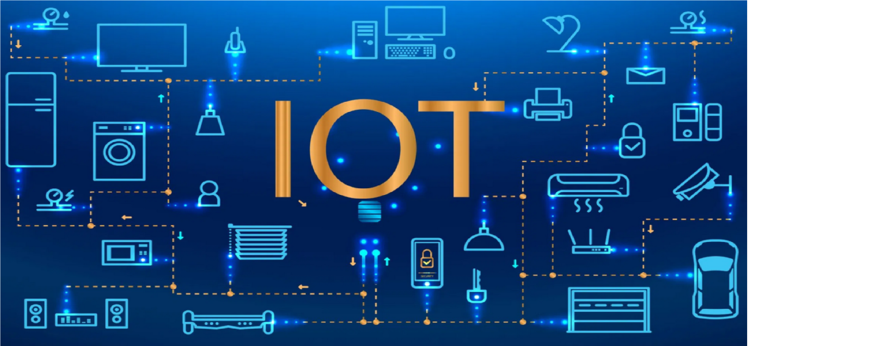

يشجع إنترنت الأشياء التواصل بين الأجهزة ، والمعروف أيضًا باسم الاتصال من آلة إلى آلة – Machine to Machine .
وبسبب هذا ، فإن الأجهزة أصبحت قادرة على البقاء على اتصال وبالتالي فإن الكفاءة والجودة بتزيد.
نظرًا لتوصيل الأجهزة والتحكم فيها رقميًا ومركزيًا بواسطة البنية التحتية اللاسلكية ، وهناك قدر كبير من الأتمتة والتحكم في الأعمال. بدون تدخل بشري ، تكون الآلات قادرة على التواصل مع بعضها البعض مما يؤدي إلى إخراج أسرع وفي الوقت المناسب.
كل ما المعلومات زادت وكانت متوفره وده بيساعد في اتخاذ قرارات أفضل. سواء كانت القرارات تحتاج إلى معرفة ماذا تشتري من متجر البقالة أو إذا كان لدى شركتك ما يكفي من الحاجيات واللوازم ، المعرفة هي القوة والمزيد من المعرفة أفضل.
الرصد والمتابعة و معرفة كمية الإمدادات الدقيقة أو نوعية الهواء في منزلك ، يمكن أن يوفر المزيد من المعلومات التي لم يكن من الممكن جمعها بسهولة من قبل.
على سبيل المثال : يمكن أن توفر لك معرفة أنك تعاني من نقص في الحليب داخل ثلاجتك الذكية أو حبر الطابعة ، و يمكن رصد انتهاء صلاحية المنتجات لتحسين السلامة.
يوفر التفاعل من آلة إلى أخرى كفاءة أفضل ، وبالتالي ؛ نتائج دقيقة يمكن الحصول عليها بسرعة. هذا يؤدي إلى توفير وقت ثمين. بدلاً من تكرار نفس المهام كل يوم ، فإنه يمكّن الناس من أداء وظائف إبداعية أخرى.
يمكن تحقيق الاستخدام الأمثل للطاقة والموارد من خلال اعتماد هذه التكنولوجيا وإبقاء الأجهزة تحت المراقبة. يمكن تنبيهنا في حالة الكوارث المحتملة والأعطال والأضرار التي لحقت بالنظام. وبالتالي ، يمكننا توفير المال باستخدام هذه التكنولوجيا.
أتمتة المهام اليومية يؤدي إلى مراقبة أفضل للأجهزة وتتيح لك IoT أتمتة المهام التي تتم يوميًا والتحكم فيها ، وتجنب التدخل البشري.
ويساعد الاتصال من آلة إلى آلة في الحفاظ على الشفافية في العمليات. كما أنه يؤدي إلى التوحيد في المهام. ويمكن أيضا الحفاظ على جودة الخدمة. يمكننا أيضا اتخاذ الإجراءات اللازمة في حالات الطوارئ. أتمتة المهام اليومية يؤدي إلى مراقبة أفضل للأجهزة: تتيح لك IoT أتمتة المهام التي تتم يوميًا والتحكم فيها ، وتجنب التدخل البشري. يساعد الاتصال من آلة إلى آلة في الحفاظ على الشفافية في العمليات. كما أنه يؤدي إلى التوحيد في المهام. ويمكن أيضا الحفاظ على جودة الخدمة. يمكننا أيضا اتخاذ الإجراءات اللازمة في حالات الطوارئ.
كل تطبيقات إنترنت الاشياء تؤدي إلي زيادة الراحة وإدارة أفضل للأجهزة وتحسين إتخاذ القرار ، وبالتالي تحسين جودة الحياة.
